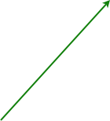
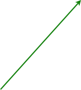
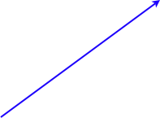
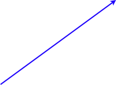

Who is sequencing and annotating the papaya genome?
The genome is being sequenced at the University of Hawaii's College of Natural Sciences' Advanced Studies in Genomics, Proteomics, and Bioinformations. The project director is Ray Ming from the Institute for Genomic Biology at the University of Illinois. The folks in charge of the sequencing are Shaobin Hou and Maqsudul Alam while the annotation is lead by Maqsudul Alam, Lei Wang, Steven Salzberg. The team leaders for annotation are Yun Feng at Nakai University, China, Jimmy Saw and Alexandre Dionne-Laporte at the University of Hawaii, and Brian Hass at TIGR. The Hawaii Papaya Genome Project's website can provide more information as to why the papaya genome is being sequenced.
What is the post-tetraploid genome of Arabidopsis?
Arabidopsis thaliana's genome, like most angiosperm genomes, contains a history of multiple ancient genome duplication events: local duplications whereby a small genomic region (e.g. a gene) is copied locally (Haberer et al., 2004), segmental duplications, and tetraploidies (Blanc et al., 2000; Blanc et al., 2003; Bowers et al., 2003; Blanc and Wolfe, 2004, Kowalski et al., 1994; Vision et al., 2000; Maere et al., 2005). The exact time of the most recent tetraploidy event is somewhere between 25 and 70 million years ago, depending on the reasoning and methods used. We agree with Bowers and coworkers (2003) in dating the event to approximately 65 million years ago. The families within the order Brassicales originated before this tetraploidy.
In the time since the tetraploidy event, the Arabidopsis genome has fractionated to a near-diploid state once again. During this mutational process of fractionation (diploidization), the majority of the homeologous (paralogous and syntenous) genes created by the most recent tetraploidy event are lost on one homeologous chromosome, or the other, but not both. However, a substantial fraction of duplicated genes are retained in duplicate. Approximately 25% of the basic gene content of Arabidopsis comes in homeologous pairs. These are called "alpha pairs" to indicated the most recent tetraploidy, alpha.
To be more specific, of the ~31,000 annotated genes in the Arabidopsis genome (TAIR, version 6 of the Arabidopis thaliana genome), about 25,000 genes remain after transposons are removed and local gene duplications are condensed to a single gene-space. Approximately 6300 genes have been retained in duplicate following the most recent genome duplication event (Bowers et al. 2003; Thomas et al. 2006) making 3150 homeologous (syntenic paralogous) gene pairs. These 3150 gene pairs define 26 large and 8 small syntenic regions and cover 89% of the extant genome (Bowers et al. 2003) [Figure 2].
Recent work has shown that the gene content of syntenic regions in Arabidopsis shows a significant bias with regards to the number of total genes retained in one syntenic region versus its homeologous region (Thomas et al 2006) [Figure 3.]
Figure 2. ~3150 homeologous (syntenic paralogous) gene pairs retained from the most recent genome duplication event mapped to the Arabidopsis genome. Each syntenic region is demarked by a unique color. Each gene is draw with a line and a triangle located either above or below the chromosome to differentiated between the genomic regions making up a syntenic region. Circles and lines highlight three pairs of syntenic regions. Centromere regions (Meinke et al., 2003) are drawn as black ovals and are located in regions without synteny. This is almost identical to that in Bowers et al. (2003).

Figure 3. Alignment of genes in syntenic region A06 from the Arabidopsis genome (Thomas et al. 2006). Retained genes are blue vertical lines, non-retained genes are gray vertical lines, and gaps are white spaces. The green-red bar denotes inversions used to align the region were red means that the lower region was inverted. The choice to invert the lower region was arbitrary and not biological.
The mechanisms responsible for this bias of gene content are currently unknown. However, understanding the evolutionary patterns that change gene content following tetraploidy may provide hints as to what underlies this process. Also unknown is the mechanism that causes fractionation of gene content following tetraploidy. Although we assume that the majority of duplicated genes are lost following plant genome duplication (Kellis et al. 2004, Scannell et al. 2006), the resulting pattern of retained genes could be caused by two processes. In one case, syntenic regions contain the full gene complement of their ancestor, and new genes have been preferentially inserted in one region. In the other, each syntenic region contains a subset of the total genes present in their ancestor, and genes have been preferentially lost in one region [Figure 4.].
Figure 4. Outline of the the two process that can lead to the pattern of gene content in syntenic regions following genome duplication events. On the left (preferred hypothesis), genes are fractionated following genome duplication resulting in each partner of a syntenic region containing a subset of their ancestral gene content. On the right, genes are inserted into the syntenic region following genome duplication resulting in each partner containing the full complement of their ancestral gene content.

How does the papaya genome help us understand the evolution of the post-tetraploid Arabidopsis genome?
The papaya genome is evolutionarily well situated for understanding the evolution of the post-tetraploid Arabidopsis genome [Figure 1]. The papaya lineage diverged from the Arabidopsis lineage just before the Arabidopsis lineage's genome duplication event, and has not undergone a genome duplication event in the time since that divergence. This means that any changes to the Arabidopsis genome that were the result from its most recent genome duplication event did not also occur in the papaya genome except by convergent evolution. Therefore, by comparing post-tetraploid syntenic regions of Arabidopsis to their corresponding syntenic (orthologous) region in papaya, we should be able to tease apart the evolutionary events that have given rise to the modern day fractionated Arabidopsis genome from its pre-tetraploid ancestor. For example, we can guess that the modern papaya genome is more similar to the ancestral genome it shared with Arabidopsis in terms of gene content and gene order than is the modern Arabidopsis genome event (though the papaya genome has underwent many inversions and translocations of its own.)
Figure 1. This diagram depicts the lineages leading to the modern day genomes of Arabidopsis and papaya, and highlights the importance of the papaya genome for understanding the evolution of the post-tetraploid Arabidopsis genome. The papaya lineage branched from the Arabidopsis lineage before the Arabidopsis lineage underwent a tetraploidy event 25-75 million years ago. In the time since that divergence, the papaya lineage has not undergone a genome duplication event (unpublished observation). This makes papaya an ideal outgroup for studying the evolution of the post-tetraploid Arabidopsis genome because any changes to the Arabidopsis genome that were a result of its most recent genome duplication event would not have also occurred in the papaya lineage. In other words, the papaya genome can be viewed as being more similar to the pre-tetraploid Arabidopsis ancestor than the extant Arabidopsis genome and therefore should be useful for understanding the evolution of the post-tetraploid Arabidopsis genome.
Welcome papaya genome researcher!
Thanks to the Hawaii Papaya Genome Project, and the Arabidopsis genomics community, papaya (Cp) and Arabidopsis (At) genomes can now be combined using a simple phylogenetic logic: papaya is the outgroup to the most recent tetraploidy event (also called the alpha event) in the Arabidopsis lineage. Using this logic, it should be possible to better annotate both papaya and Arabidopsis genomes and genes, to spot subfunctionalization events in At, to hypothesize neofunctionalization events, and to reconstruct a good likeness of the Brassicales ancestor.
Aligning three sequences in one graphic is a challenge. Information overload is certainly a problem. Our newest comparative genomics tool, SynView -- couples our comparative genome database, CoGe, and bl2seq (Tatusova and Madden, 1999). This is a beta test application. Our lead programmer, Eric Lyons, is counting on user feedback. Contact Eric, or any of us in the Freeling lab or Freeling-Thomas collaboration using the e-mail addresses on the "Contact Us" page. Thanks.
What has be learned thus far?
Using SynView, our comparative genomics tool for easily comparing up to three genomic regions, we have determined that the papaya lineage has not had a tetraploidy of its own, and that gene loss is what has shaped the post-tetraploid Arabidopsis genome [Figure 4]. Even through the papaya gene models are not yet complete (and are absent from the analysis presented here), three-way comparison of syntenic regions easily identifies the Arabidopsis' orthologous genes in papaya and shows that each homeologous Arabidopsis chromosomal segment contains a subset of the gene content contained in the syntenous papaya segment. Together, both Arabidopsis syntenic regions contain the full gene complement of the syntenous papaya region. See figures 5, 6, 7, 8, 9. For a complete explanation of SynView and how it fits into the larger scheme of CoGe, please visit SynView's help pages.
Figure 5. Results from a three-way comparison of three genomic regions using SynView. The three genomic regions are drawn horizontally with papaya supercontig_226 on the top, one Arabidopsis syntenic region from chromosome 1 in the middle, and a second Arabidopsis syntenic region from chromosome 2 on the bottom. Each genomic region is divided into two halves by a dashed line with the top half representing the 5'->3' DNA strand and the bottom half representing the 3'->5' DNA strand. The background of these genomic regions are colored green and orange representing GC content and unsequenced (N) DNA respectively. Nearest to the center dashed line for each Arabidopsis image are arrows colored red, blue, and green that represent gene models (red == gene, blue == mRNA, green=CDS). Notice that papaya does not have any gene models as the version of the genome used in this example had not been annotated. The genomic regions have been compared pair-wise (papaya <-> Arabidopsis_1 [At1], papaya <-> At2, At1 <-> At2) to find regions of local sequence similarity using bl2seq. The blast high scoring pairs (HSPs) are represented by colored, numbered boxes that appear above or below gene models (when present) for HSPs in the ++ or +- orientation respectively. Each pair-wise comparison is colored differently (blue: papaya<->At1, green: papaya<->At2, red: At1<->At2) and a set of pairs have been labeled in the figure by colored, arrowed lines.


 

 


Figure 6. Same figure as in figure 5, but with lines connecting contiguous sets of blast HSPs (red lines and boxes) showing a series of genes from the two Arabidopsis regions with a high degree of sequence similarity (likely syntenic paralogs, homeologs) and conservation of order. This demonstrates synteny between these two genomic regions of Arabidopsis and resulted from the most recent genome duplication event in Arabidopsis. Of the 16 and 21 genes shown in Arabidopsis regions 1 and 2 respectively, there are 7 pairs of syntenic paralogous gene pairs.


Figure 7. Same figure as in figure 5, but with lines connecting blast HSPs (blue lines and boxes) between papaya and one Arabidopsis region (on chromosome 1). Of the 16 annotated genes in that region of Arabidopsis, 11 have regions of high sequence similarity in papaya. All of those 11 Arabidopsis genes are contiguous so that the Arabidopsis genes without sequence similarity to papaya may be outside of the sequenced papaya region. This is definitely the case for the three genes on the right side of the Arabidopsis region.

Figure 8. Same figure as in figure 5, but with lines connecting blast HSPs (green lines and boxes) between papaya and the second Arabidopsis region (on chromosome 2). Of the 21 annotated genes in that region of Arabidopsis, 14 have regions of high sequence similarity in papaya (are are very likely to be homologs). Those 14 Arabidopsis genes are broken into two sets of contiguous genes (with four genes separating the two sets). Of the remaining 3 genes (two on the left side of the region, one on the right), their papaya orthologs are likely to be beyond the sequenced region of papaya. Perhaps the four genes in Arabidopsis chromosome 2 that are not accounted for in the papaya supercontig_226 will be elsewhere in the papaya genome.

Figure 9. Same figure as in figure 5, but all the homeologous and orthologous gene pairs are connected with colored lines as used in figures 6, 7, and 8. Notice that each Arabidopsis region contains a subset of the total gene content of papaya. Shaded circles are drawn on the papaya genomic region to indicate the presence of orthologous genes in the two Arabidopsis regions (blue == papaya and At 1, green == papaya and At 2, red == papaya and At 1 and At 2.)


May I repeat these results myself using SeqView?
Yes! Follow this link to SynView to get to SynView with the regions used in the above example pre-specified. You will have to adjust the range of the genomic regions and some of the algorithm options to generate the exact results seen above. For a complete explanation of SynView and how to interpret its results, please visit SynView's help pages. When you go to SynView, you will need to log in with a papaya user account in order to get access to the papaya genome sequence. If you don't know the papaya account name and password, please contact Ray Ming of the papaya genome sequencing project.
May I pursue my own research using SynView?
Please. We have prepared a preliminary Arabidopsis gene - papaya supercontig best blast list. This was generated by using each Arabidopsis gene as a blastn query to all the papaya supercontigs. We recommend reading the SynView's help pages to get information on how to use SynView, but here are some helpful tips when working with papaya contigs:
1. The contigs may be quite large! Since we don't have annotations for papaya, in order to "zoom in" on a region of interest, you will need to adjust the "upstream"/"downstream" positions. To do this for contig sequences, you will need to use negative numbers which will center the region analyzed to the interior of the contig. For more information on this, please read the section "How do I use "CoGe Database Retrieval" to select a genomic region for comparison?".
2. You may want to invert one genomic region to get the order of syntenic genes in different regions to align. To do this, select "yes" for the "reverse region display" option available in the "CoGe Database Retrieval" menu.
Who is primarily responsible for the work presented here?
Eric Lyons from the Department of Plant and Microbial Biology at UC Berkeley. Computational infrastructure is provided by the Statistics and Bioinformatics Consulting Service in the College of Natural Resources at UC Berkeley. For more information about the the team behind CoGe, please visit our contact page.